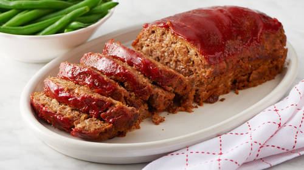

Meatloaf Recipe

A nice chonky meatloaf! Here's how to make it...
Ingredients
- 1 cup Breadcrumbs
- 1/4 cup Chopped Onion
- 1 lb Ground Beef
- 2 large Eggs
- 1 tsp Italian Seasoning
- 1/2 cup Ketchup
- 1/2 cup Milk
Steps
- Heat oven to 350°F. In large bowl, mix Meatloaf ingredients well. Press mixture in ungreased 8x4-inch loaf pan. Bake 40 minutes.
- Remove from oven. Spread 1/4 cup ketchup evenly over top. Bake an additional 15 to 20 minutes or until meat thermometer inserted in center of loaf reads 160°F. Let stand 10 minutes before serving.